Changes 1 to 12 came from the Week 9 check-in and the branding kit. From 13 on, they came from the class Drive on 1 November: Team 2's page content, the fact sheet, the staff interviews and the Week 10 meeting. Each one shows the site before next to the same spot now, with the names of whoever asked for it. The live site already has all of it.
Every word on the site is now one of the kit's four fonts: Josefin Slab for headings, Lora for reading, Cinzel for the small spaced-out labels (like "RANCH" in the logo), and Allura for the one script line. The kit's tagline now sits under the homepage headline.
Before
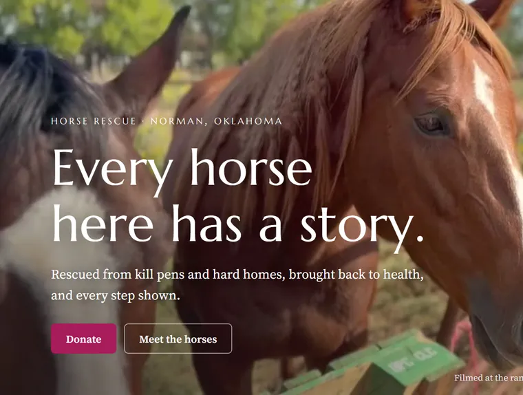
Marcellus and Source SerifAfter
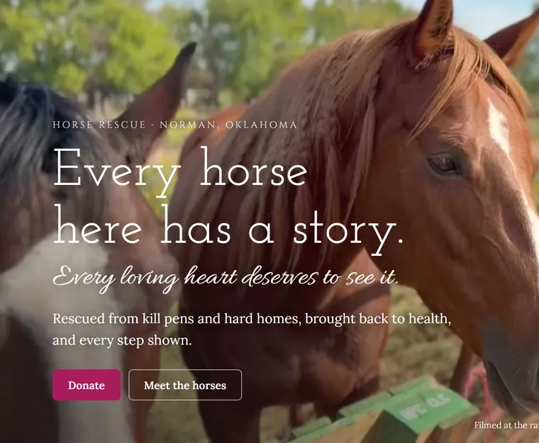
Josefin Slab, Allura, Lora, Cinzel
2
Real numbers on the homepage
Suggested by Sthefanny (SNB) and Kaylee (KV)
Two blanks and "11 horses photographed" became Braxton's real figures: 20+ rescued since 2022, 4 rescues now, about $360 a month per horse, and $9 for a day of hay and feed.
Before
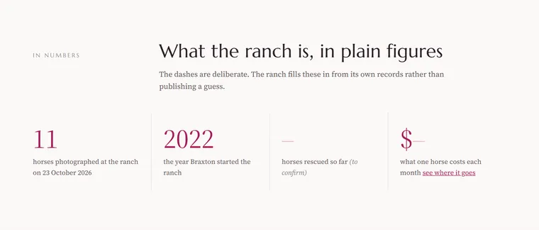
Dashes and "to confirm"After
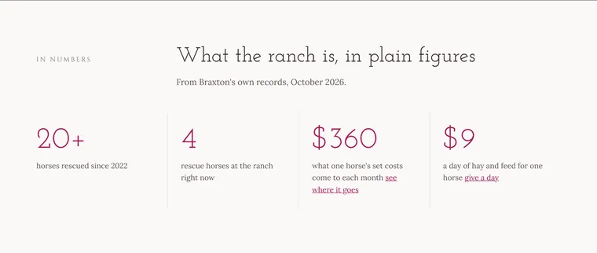
Braxton's figures
3
A live goal tracker
Suggested by Naomi (NS)
The brief's goal of $2,000 to $3,000 by January, a bar that fills from every gift once donations go live, and what's still needed: money, hay and feed, supplies, volunteer time. It says $0 because nothing has been given through the site yet. See it on the site →
Before
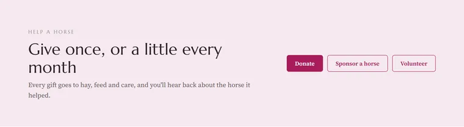
No goal anywhereAfter
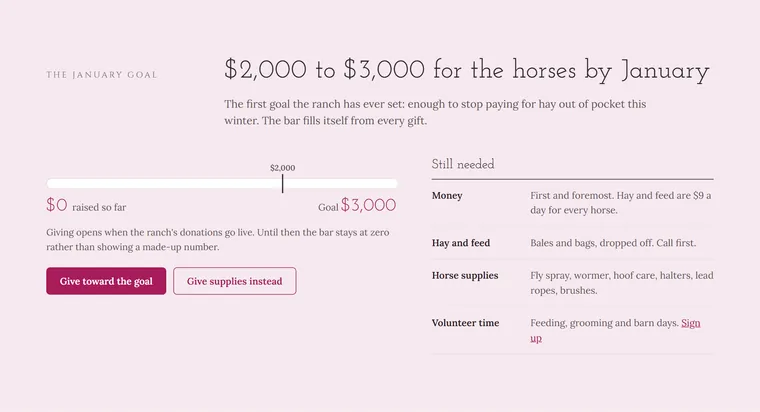
The January goal
4
Amounts that say what they buy
Suggested by Jonathan (JG) and Ava (AG)
"Instead of just asking for $50, describe what $50 helps provide." The tiles now come from Braxton's costs: $9 is a day of hay and feed, $50 a farrier visit or a month of supplements, $360 one horse's whole month. See it on the site →
Before
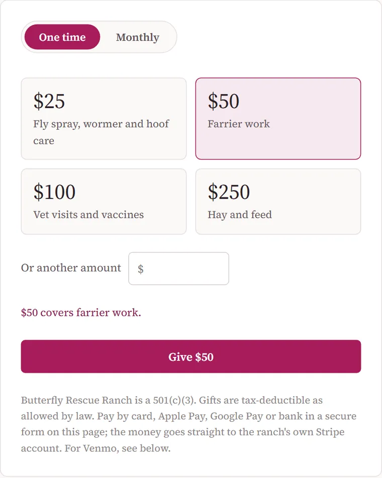
$25 / $50 / $100 / $250, guessedAfter
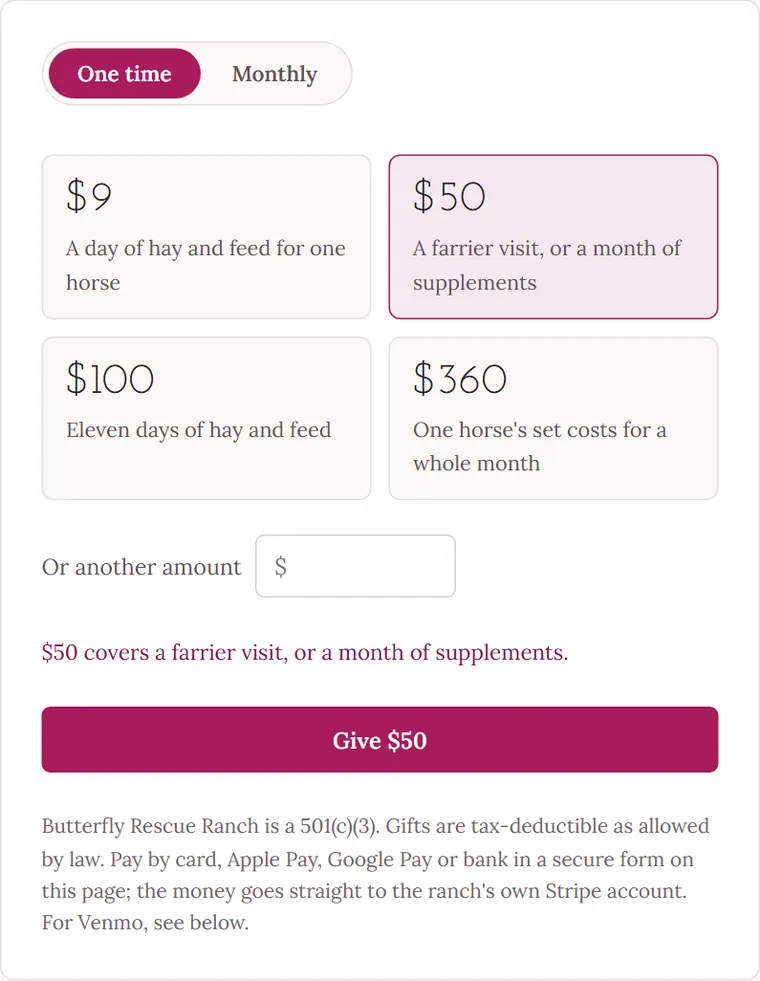
$9 / $50 / $100 / $360, from her costs
5
What one horse really costs
Suggested by Jonathan (JG), Ava (AG) and Sthefanny (SNB)
The cost table on the Donate page was all dashes. Now: hay and feed $274, supplements $50, farrier $36 a month, vet as needed. $360 a month for one horse. See it on the site →
Before
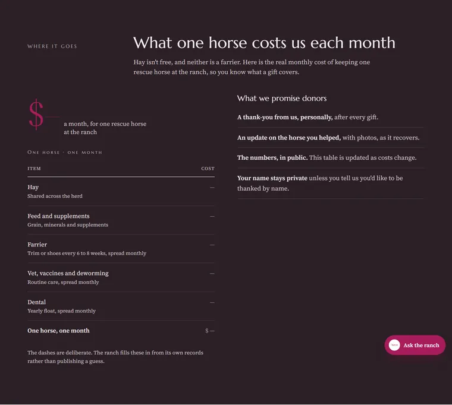
Every line a dashAfter
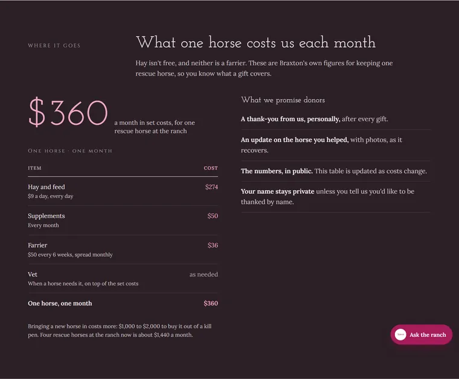
$360 a month, line by line
6
Rico, by name
From Andrew's (AE) storyboard, Autumn's (AH) "Meet our Why" and Kaylee's (KV) horse journeys
"The gray" is Rico, matched from Andrew's storyboard and Naomi's print ad. Every horse page now has the small ask Autumn described: "$9 feeds Rico for a day". See it on the site →
Before
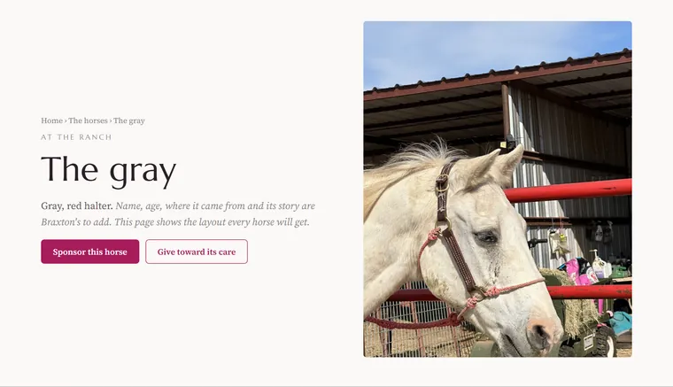
"The gray", story to addAfterRico and "$9 feeds Rico for a day"
7
Rico's journey, step by step
Suggested by Kaylee (KV) and Gracie (GY)
The journal was a template. For Rico it now runs: pulled from the kill pen, back to health, a home, brought back worse, here for good. See it on the site →
Before
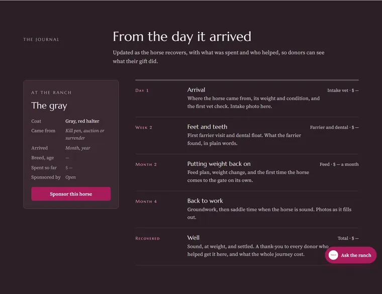
A templateAfter
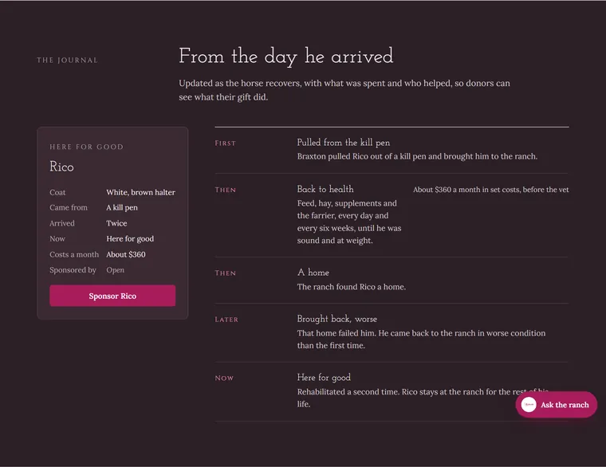
Rico's real story
8
Sponsor levels with prices
Suggested by Jonathan (JG) and Ava (AG)
Friend $27 (three days of hay), Sponsor $90 (a quarter of a horse's month), Business $360 (one horse's whole month). These are suggestions from her costs; Braxton sets the final levels. See it on the site →
Before
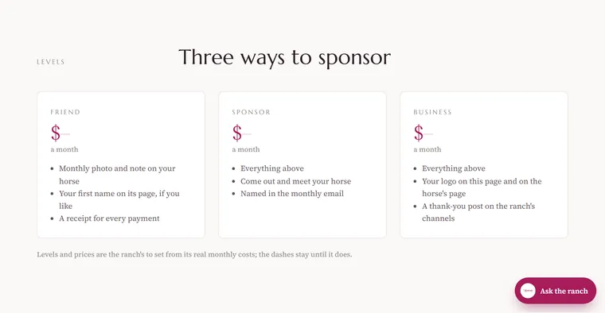
No pricesAfter
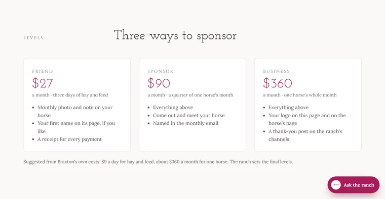
$27 / $90 / $360
9
Dates at the ranch
Suggested by Gracie (GY)
The Volunteer page now has barn day, volunteer orientation and Meet the horses. Braxton sets the dates. See it on the site →
Before
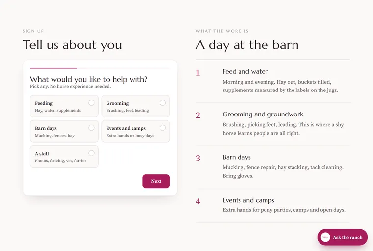
Form only, no datesAfter
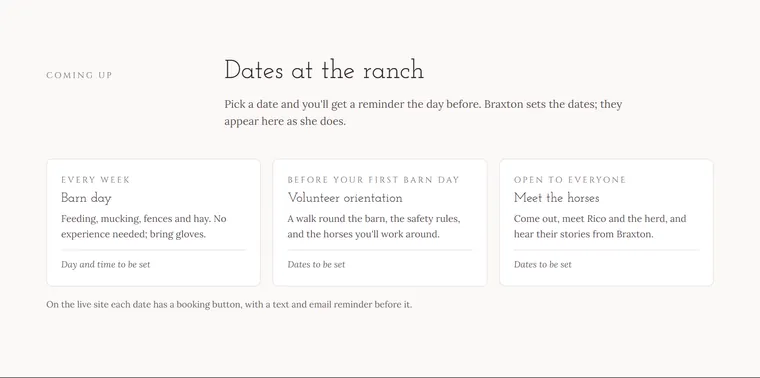
"Dates at the ranch"
10
Found a horse in trouble?
Suggested by Savannah (SF), from Wildcare Oklahoma
New on the Visit page: keep yourself safe (911 first if a horse is loose on a road), note where it is, call the ranch. See it on the site →
Before
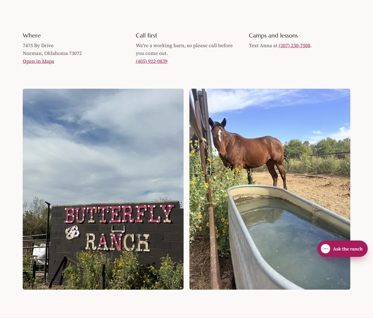
Address and phone onlyAfter
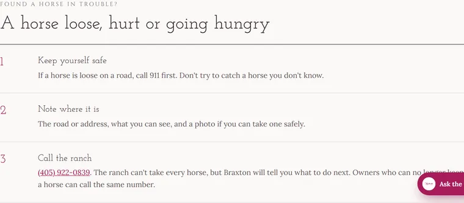
Three steps
11
Donate on phones
Suggested by Abby (AC)
On a phone the Donate button used to drop out of the top bar. It now stays there on every page.
Before
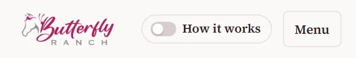
No Donate in the top barAfter
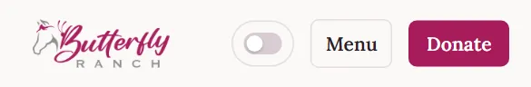
Donate always there
12
"A home" as the last step
From Braxton's answers in Team 1's brief
"How a horse comes through" stopped at "Followed, in public". It now ends with a home: some horses go to new homes, some stay for good, like Rico.
Before
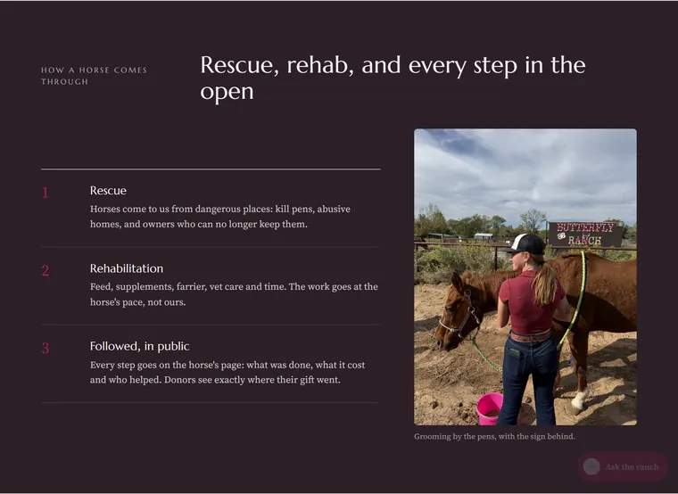
Three stepsAfter
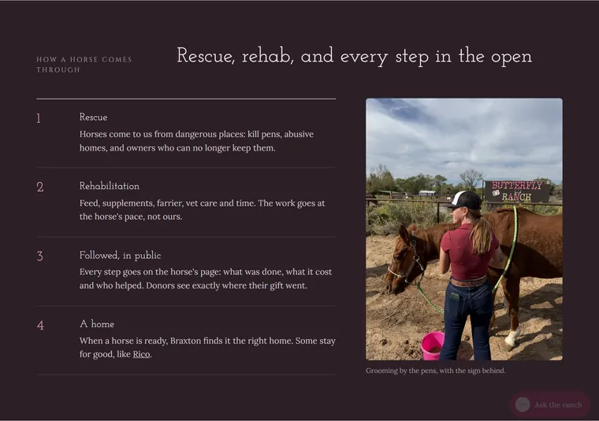
Four steps, ending with a home
From the class Drive, 1 November
Team 2's page content, the fact sheet, the staff interviews and the Week 10 meeting.
13
Only the four rescue horses
From the fact sheet and Team 2's website ideas
Braxton has four horses in the rescue: Rico, Reba, Dandelion and Daisy. The other seven on the site were her own horses, and Team 2 pointed out donors shouldn't be asked to pay for a personal horse. "The horses at the ranch right now" became "Meet the herd", with just the four. Their old pages forward on. See it on the site →
Before
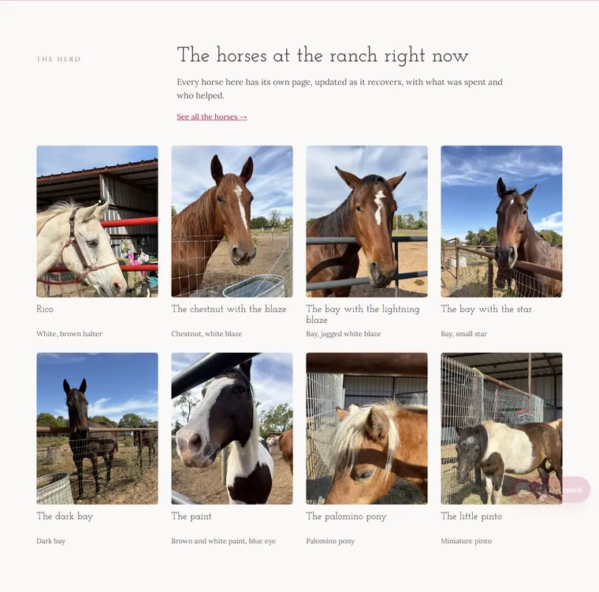
Eleven horses, mostly unnamedAfter
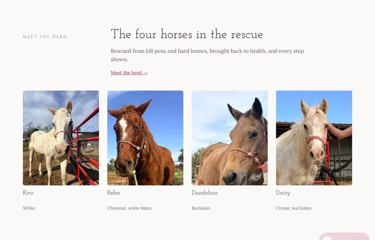
Rico, Reba, Dandelion and Daisy
14
Every horse has a real story now
From the staff interviews and Emily's (EM) sponsor-a-horse notes
Each horse page used a template with "Braxton to add". Now each has its story from the staff interviews, a quote from the ranch staff, and a journal: Daisy arriving "a skeleton", Reba's old knee injury, Dandelion learning nobody would hurt her, Rico's years as a reining horse. Photos are the class's headshots of each horse. See it on the site →
Before
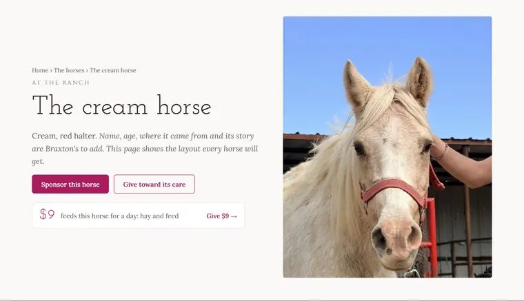
"The cream horse", story to addAfter
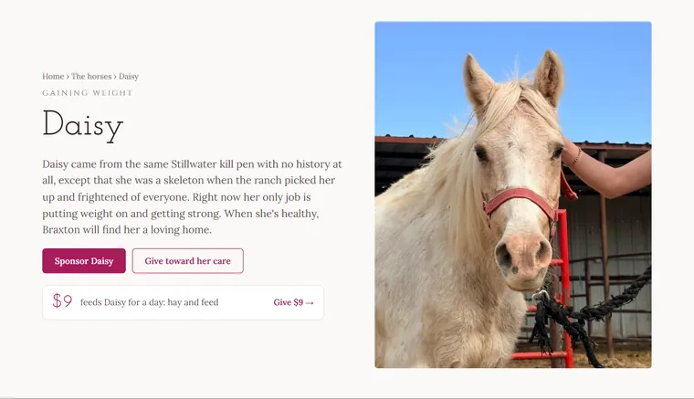
Daisy, in the staff's words
15
Rico's before and after on the homepage
Suggested by Savannah (SF) and Abby (AC), Team 2's homepage notes
Team 2's "The journey to a second chance" replaces "How a horse comes through", in their words, with Rico arriving next to Rico today. (The two photo files in the Drive were labelled the other way round; the thin one is when he arrived.)
Before
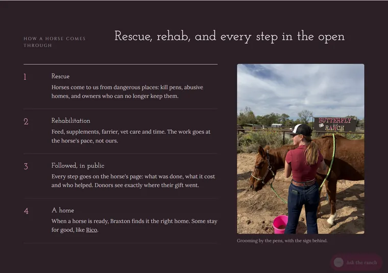
Four steps and a grooming photoAfter
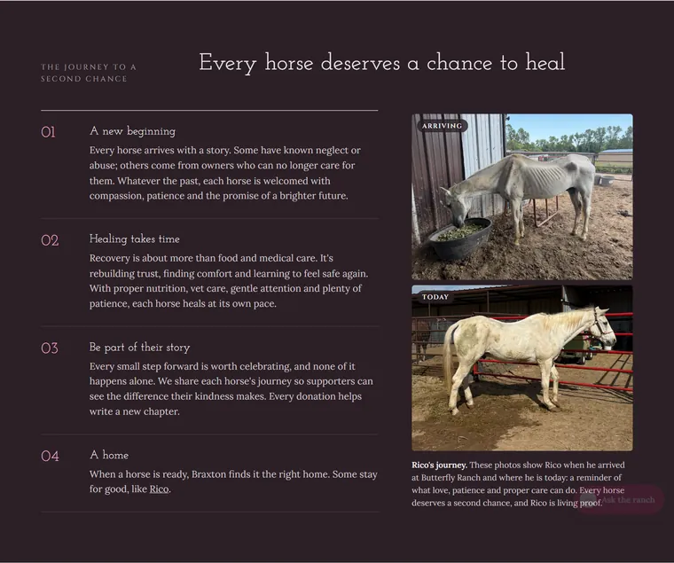
Team 2's journey, with Rico arriving and today
16
A staff quote under the video
Suggested by Savannah (SF) and Abby (AC)
Team 2 asked for a quote from the staff in the pink box under the video. It's one of the five strong quotes from the interview transcripts, about Dandelion. The hero now has the address, a bigger Donate button and the full tagline, and "Help a horse" moved up under the quote.
Before
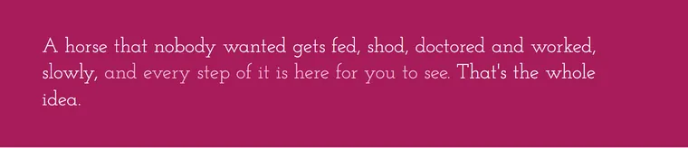
Our own lineAfter
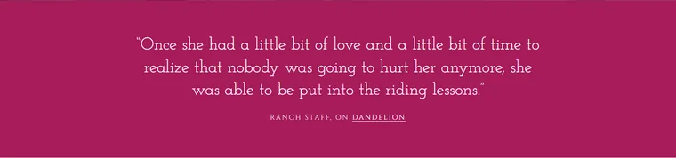
The ranch staff, on Dandelion
17
Sponsor a horse: the four, with their stories
Suggested by Emily (EM)
The sponsor page opened with levels and a form, and listed every horse. It now starts with the four rescue horses: who they are, where they are now, and what sponsoring each one pays for, each with a Sponsor button that picks that horse in the form. See it on the site →
Before
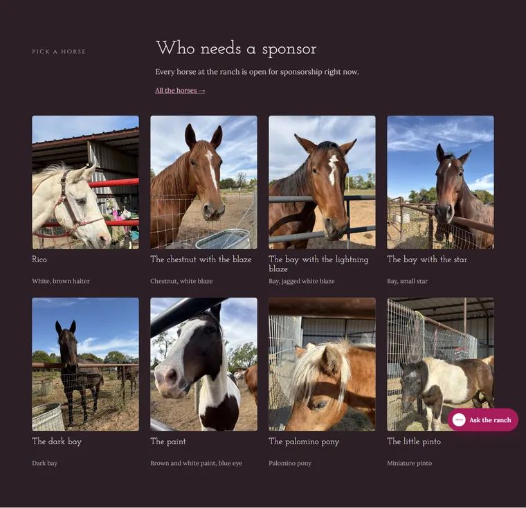
Every horse "open for sponsorship"After
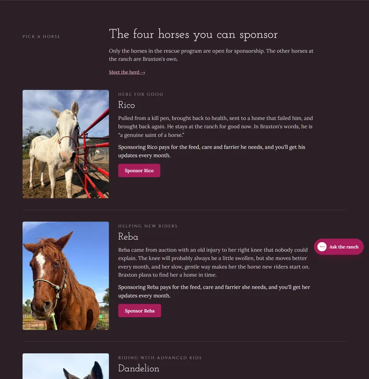
The four, with their stories
18
Donate: Team 2's headline and photo
Suggested by Savannah (SF); the button change is Team 3's idea
"Transparency you can trust, impact you can see", Savannah's intro, and her photo of the sign. The give button now says "Give $50 once" or "Give $50 a month", so nobody gives monthly by mistake. See it on the site →
Before
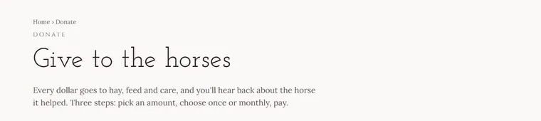
"Give to the horses"After
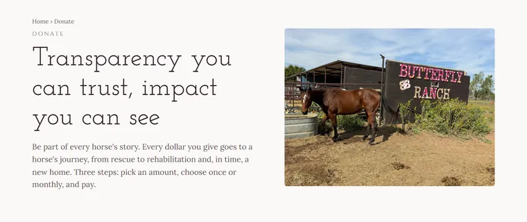
Savannah's headline, intro and photo
19
How far to the next horse
Suggested by Savannah (SF)
"We are $6,300 away from saving our next horse this year": up to $2,000 to buy a horse out of a kill pen, plus a year of its care at the fact sheet's costs. The bar sits at $0 until donations go live. Below it, Savannah's "Why your support is critical". See it on the site →
Before
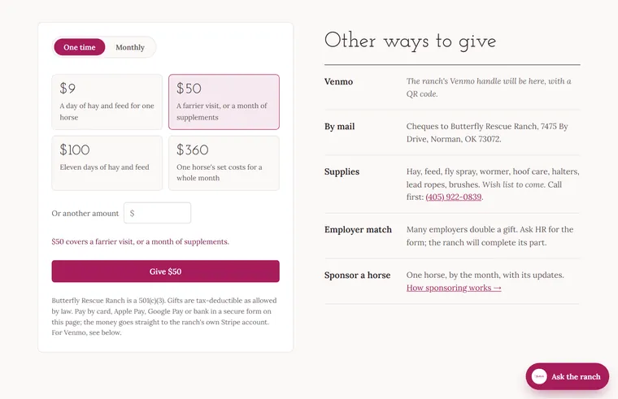
Straight from the form to the costsAfter
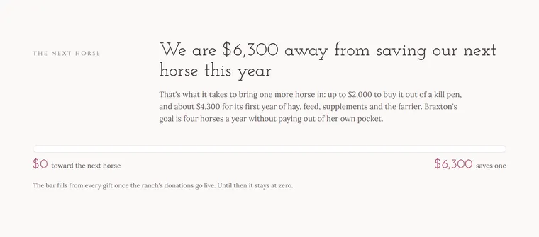
$6,300 to the next horse
20
A gift more than money
Suggested by Savannah (SF) and Team 2
Supplies were one line under "Other ways to give". Now they have their own section with Savannah's tack-room photo, what's needed most, and a place for the Amazon wish list. See it on the site →
Before
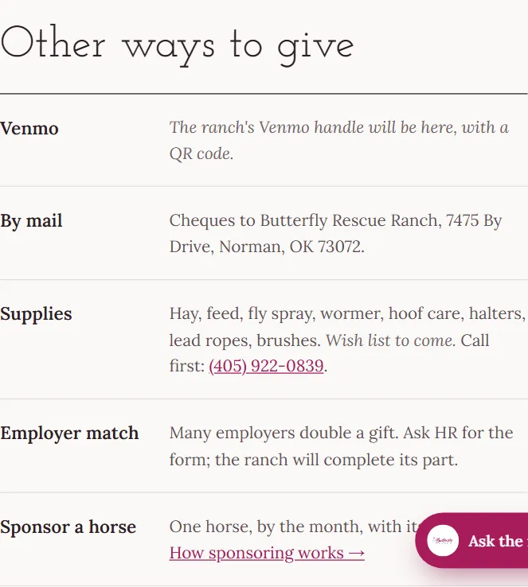
One lineAfter
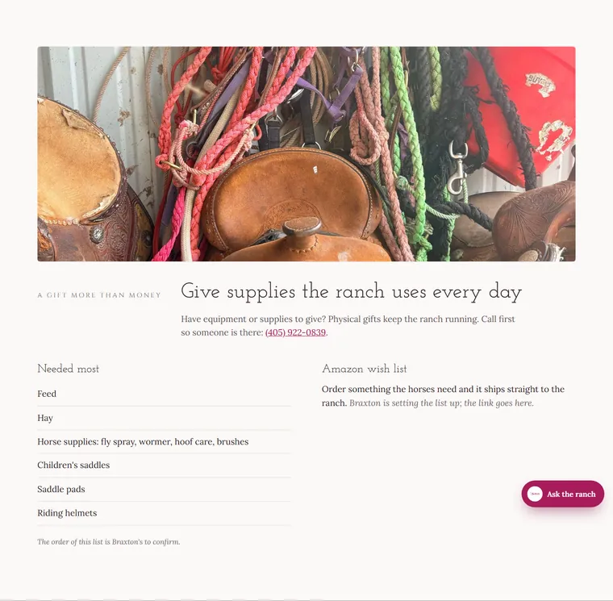
Its own section
21
Volunteer: Emily's words and photo
Suggested by Emily (EM)
"Make a difference, one horse at a time", Emily's intro and body copy, her photo, and her key facts as the questions at the bottom of the page. See it on the site →
Before
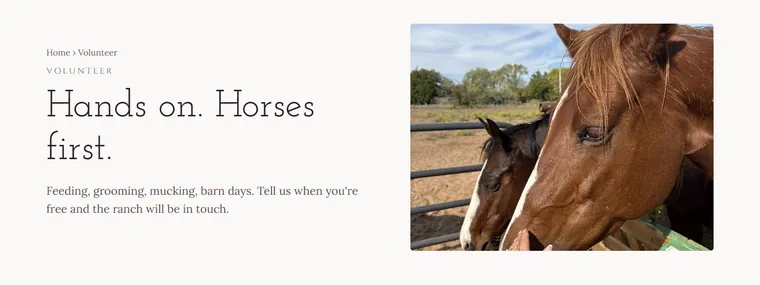
"Hands on. Horses first."After
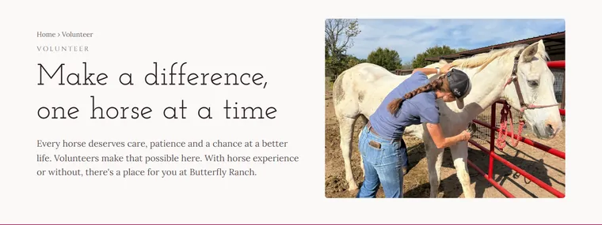
Emily's headline and photo
22
The petting zoo comes off the site
Decided at the Week 10 all-agency meeting
Braxton keeps the petting farm separate from the rescue, so the petting-zoo photos left the gallery, the homepage program section went (Team 2 asked too), and pony parties came off the lessons page. See it on the site →
Before
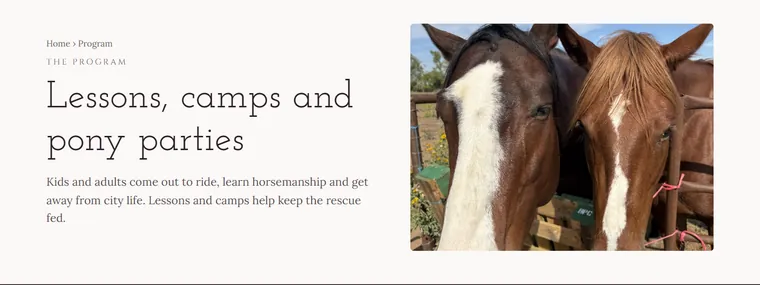
Lessons, camps and pony partiesAfter
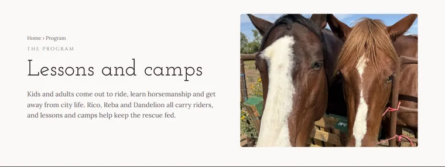
Lessons and camps
23
The plain figures move to About
Suggested by Savannah (SF) and Abby (AC)
Team 2 asked for "the ranch in plain figures" to move to the About page, so the homepage goes from the goal straight to the horses. The numbers are the same. Sthefanny and Kaylee asked for them on the homepage in Week 9, so it's worth agreeing as a class. See it on the site →
BeforeOn the homepageAfter
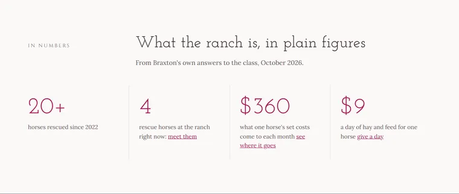
On the About page
Still open
Waiting on Braxton
Sponsor prices $27, $90 and $360 are worked out from her costs. She sets the real levels.
Event dates Barn day, orientation and Meet the horses have no dates yet.
Venmo, PO Box, Amazon list Savannah is asking Braxton. The Venmo handle in Team 2's notes is marked "to confirm", so it is not on the site yet.
Supplies list Team 2's list includes children's saddles and helmets; Braxton sets the order.
Volunteer experience Team 2 couldn't remember whether Braxton needs horse experience; the site says she will confirm.
Two money goals The homepage shows the fact sheet's $2,000 to $3,000 by January; Donate shows Team 2's $6,300 to the next horse. Keep both, or pick one?
Not built yet Team 1's public thank-yous on the tracker, an impact wall, and online photo releases and waivers. Team 3's "adopt a horse" wording is held back: Braxton rehomes horses for real, so "adopt" would mean two things.
The web address The ads say butterflyrescueranch.org, which still opens the old Wix site. It has to point here before any ad runs.